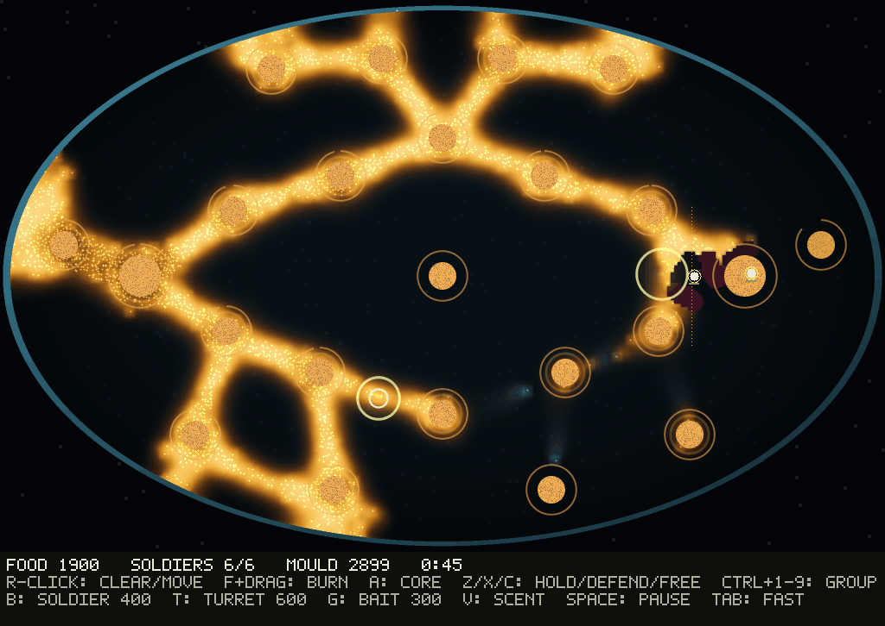
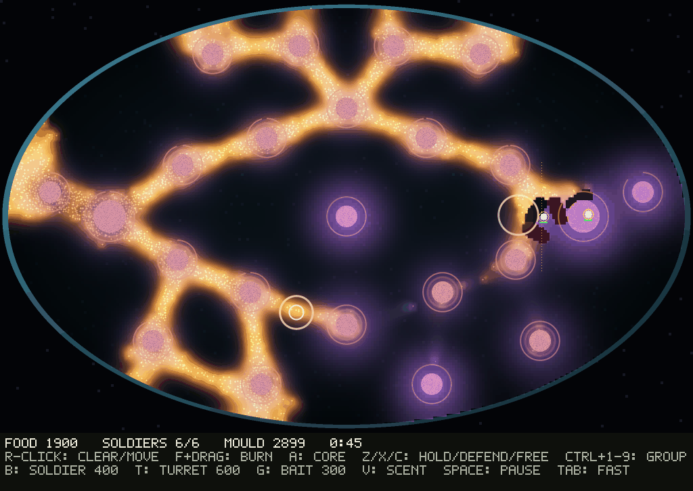

<title>Larder M3 Window</title>
<meta name="claude:viewport-fit-sides" content="cover">
<link rel="stylesheet" href="https://fonts.googleapis.com/css2?family=Space+Grotesk:wght@500;700&family=Inter:wght@400;600&family=JetBrains+Mono:wght@400&display=swap">
<style>
/* Layout: one reading column; pictures in pairs (fed | lean), counts under each pair. */
:root {
  --bg: #f5f4ef; --fg: #1d1f1a; --muted: #5f6458; --line: #d9d8cf; --gold: #a4700f; --pale: #5b7a8c; --bad: #a33a2a;
  --display: "Space Grotesk", system-ui, sans-serif; --body: "Inter", system-ui, sans-serif; --mono: "JetBrains Mono", ui-monospace, monospace;
}
@media (prefers-color-scheme: dark) { :root:not([data-theme="light"]) { --bg: #12140f; --fg: #e6e5dc; --muted: #9da293; --line: #2e3229; --gold: #e2ab3f; --pale: #9fc0d2; --bad: #e07a66; color-scheme: dark } }
:root[data-theme="dark"] { --bg: #12140f; --fg: #e6e5dc; --muted: #9da293; --line: #2e3229; --gold: #e2ab3f; --pale: #9fc0d2; --bad: #e07a66; color-scheme: dark }
body { background: var(--bg); color: var(--fg); font-family: var(--body); font-size: 15px; line-height: 1.55;
  padding-left: max(16px, env(safe-area-inset-left, 0px)); padding-right: max(16px, env(safe-area-inset-right, 0px)); padding-block: 28px 48px; }
main { max-width: 980px; margin: 0 auto; display: flex; flex-direction: column; gap: 28px; }
h1, h2 { font-family: var(--display); text-wrap: balance; margin: 0; }
h1 { font-size: 1.9rem; }
h2 { font-size: 1.25rem; }
p { margin: 0; max-width: 68ch; }
.verdict { border-left: 4px solid var(--bad); padding: 4px 0 4px 14px; }
.pair { display: grid; grid-template-columns: 1fr 1fr; gap: 12px; }
@media (max-width: 640px) { .pair { grid-template-columns: 1fr; } }
figure { margin: 0; display: flex; flex-direction: column; gap: 6px; min-width: 0; }
figure img { width: 100%; border-radius: 4px; display: block; }
figcaption { font-size: 0.85rem; color: var(--muted); }
figcaption b { color: var(--fg); }
.wrap { overflow-x: auto; }
table { border-collapse: collapse; font-variant-numeric: tabular-nums; font-size: 0.9rem; min-width: 560px; width: 100%; }
th, td { text-align: left; padding: 6px 10px; border-bottom: 1px solid var(--line); }
th { font-family: var(--display); font-weight: 500; color: var(--muted); }
td.n { font-family: var(--mono); }
.fed { color: var(--gold); } .lean { color: var(--pale); }
section { display: flex; flex-direction: column; gap: 12px; }
small { color: var(--muted); }
</style>
<main>
  <header style="display:flex;flex-direction:column;gap:10px">
    <h1>Larder M3: full controls, soldiers that fight from range</h1>
    <p>Two new mould answers (spores, a dormant crust) failed and were cut. What loosened the ladder was the soldiers. They now fire from range instead of walking onto a pile the mould is eating, spread their shots, and keep a loose formation.</p>
    <p class="verdict" style="border-left-color:var(--gold)"><b>No plan is best on 13 or more of 16 held-out seeds any more.</b> In M2 the reader was best on 13 fed and 12 lean. Now it is best on 8 and 10, a timed striker on 5 and 4, and the farmer on 3 and 2. Two pairs change winner between fed and lean fields, but neither is significant yet.</p>
  </header>
  <section>
    <h2>The window at 0:45 (seed 17, from a replay file)</h2>
    <div class="pair">
      <figure><figcaption><b>Normal view.</b> Four soldiers clear the pile beside the larder from range; two more were bought and set to burn a line. 6 soldiers, 2,899 walkers, 1,900 food.</figcaption></figure>
      <figure><figcaption><b>Scent view (V).</b> The smell the mould climbs. The free, full piles on the right smell strongest; where the mould has eaten there is none.</figcaption></figure>
    </div>
  </section>
  <section>
    <h2>Held-out census, seeds 17-32</h2>
    <div class="wrap"><table>
      <thead><tr><th>Plan</th><th class="fed">Fed median</th><th>Best on</th><th class="lean">Lean median</th><th>Best on</th></tr></thead>
      <tbody>
        <tr><td>Reader</td><td class="n">−0.250</td><td class="n">8</td><td class="n">1.586</td><td class="n">10</td></tr>
        <tr><td>Striker (bait and farm, then hunt at 6:00)</td><td class="n">−0.500</td><td class="n">5</td><td class="n">−1.450</td><td class="n">4</td></tr>
        <tr><td>Farmer</td><td class="n">−0.375</td><td class="n">3</td><td class="n">1.375</td><td class="n">2</td></tr>
        <tr><td>Baiter</td><td class="n">−0.500</td><td class="n">0</td><td class="n">0.000</td><td class="n">0</td></tr>
        <tr><td>Idle, random, fortress, hunter</td><td class="n">−1.79 to −1.93</td><td class="n">0</td><td class="n">−1.79 to −1.93</td><td class="n">0</td></tr>
      </tbody>
    </table></div>
    <small>M2 on the same seeds: the reader was best on 13 fed and 12 lean. Flips: striker beats the farmer fed 10 of 16 and loses lean 12 of 16; striker beats the baiter fed 7 of 11 and loses lean 12 of 16. Neither survives Holm over 34.</small>
  </section>
  <section>
    <h2>Frame on Scott-Desktop, 40 soldiers</h2>
    <div class="wrap"><table>
      <thead><tr><th>Scent view</th><th>Mean</th><th>p95</th><th>Max</th><th>Of which: dish draw / game step / scent</th></tr></thead>
      <tbody>
        <tr><td>Off</td><td class="n">7.15 ms</td><td class="n">9.60 ms</td><td class="n">10.59 ms</td><td class="n">6.13 / 0.93 / 0</td></tr>
        <tr><td>On</td><td class="n">8.93 ms</td><td class="n">11.60 ms</td><td class="n">13.93 ms</td><td class="n">5.89 / 0.92 / 2.02</td></tr>
      </tbody>
    </table></div>
    <small>Gate: under 10 ms. Headless bench, one step and one full draw a frame, three runs, i5-6600K.</small>
  </section>
  <section>
    <h2>Try it</h2>
    <p><code>cargo run --release --bin larder -- 17</code>. Box-select soldiers and right-click a pile to clear it, or the ground to move. F+drag burns a line, A attacks the core, Z/X/C set stances, Ctrl+1-9 makes groups. B buys a soldier, T builds a turret, G lays bait, V shows the scent. R and Esc save a replay of the round.</p>
  </section>
</main>
